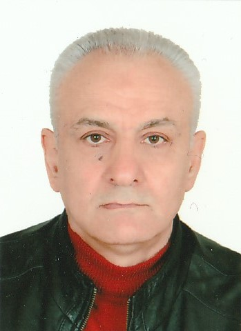

رزومه شهریارشمسی
اطلاعات شناسنامه ای
نام : شهریار نام خانوادگی : شمسی تاریخ تولد : 07/09/ 1338 وضعیت تاهل : متاهل : تعداد فرزند : 2 شغل : کارمند قرارداد معین وزارت امور اقتصاد و دارای معاونت اقتصادی شماره تماس منزل : 22964663 شماره تلفن محل کار : 33904061 شماره تلفن همراه : 09125575727
شهر محل : سکونت تهران دانشجو رشته مهندسی کامپیوتر دانشگاه پیام نور لواسانات مهمان در دانشگاه پیام نور شمال تهران ترم ماقبل آخر فارغ التحصیلی (ترم 7) واحد گذرانده : 116 معدل ترم قبل : 49/ 16 واحدهای ترم جاری20
Email:shahriarshamsi997177@gmail.com
خصوصیات فردی:
من دریک خانواده متوسط فرهنگی بدنیا آمده ام و خصوصیات روحیم عبارت است از اینکه بیشتر گوش میدهم تا حرف بزنم حافظه درازمدت خوبی دارم و سعی می کنم خروجیهای خوبی داشته باشم .
اطلاعات تحصیلی:
مدرک دانشگاهی تاریخ اتمام تحصیل تاریخ شروع تحصیل نام دانشگاه یا موسسه آموزش عالی
مهندسی کامپیوترمهندسی(لیسانس) نیمسال دوم 00-1399 مهرماه 1395 دانشگاه پیام نور مرکزلواسان
کاربردکامپیوتر کاردانی اسفندماه 1368 آبانماه 1365 دانشگاه شهید بهشتی
مهارتهای فنی و تخصصی:
درسال 1368 بعد ازاتمام تحصیلات از دانشگاه شهید بهشتی در شرکت نرم افزاری گستره نگار که آن موقع روی اولین ورد پروسسور فارسی کار می کردند و اسمش را هم به اسم شرکتشان ثبت کرده بودند به عنوان کارمند بخش فنی ودیباگ نرم افزار مشغول به کارشدم پس ازآن درسال 1370 به عنوان مسئول بخش کامپیوتر به استخدام یک شرکت تولیدی دگمه منگنه به نام شرکت پایپوش درآمدم تا شهریور 1374 ازآن موقع به بعد به شرکت مرکزتحقیقات الکترونیک و کامپیوتر دانشگاه که آن موقع وابسته به دانشگاه تهران بود به عنوان برنامه نویس فاکس پرو و دیتابیس که آن زمان تنها پایگاه اطلاعاتی برای کد نویسی بود رفتم کار در آنجا به صورت گسترده تر و اختصاصی تربود با نیروگاهها و دانشگاهها به خاطر قراردادهایشان ارتباط مستقیم داشتیم درمورد نیروگاهها یک پروژه جمع آوری اطلاعات آنالوگ ودیجیتال بود که سخت افزار آن عبارت بود از بردهای آنالوگ و دیجیتال که در اتاق فرمان نصب می شد و ارتباط این بردها با نرم افزار اختصاصی نوشته شده توسط تیم نرم افزار شرکت برقرار میشد و تمام حالات نیروگاه را مانیتور میکرد همچنین در دانشگاههای نظیر دانشگاه علم و صنعت دانشگاه زنجان دانشگاه لرستان دانشگاه سهند تبریزو دانشگاه مازنداران یک سیستم نرم افزاری به نام سیستم آموزش دانشگاهها نصب بود که من مسئول دیباگ برنامه نویسی و بروزرسانی نرم افزار وتهیه درخواستهای کاربران آن سیستم آموزشی در آموزش کل این دانشگاهها بودم این فعالیت تا سال 1385 ادامه داشت بعد ازآن به عنوان مسئول فنی نرم افزار سخت افزار وشبکه معاونت امور اقتصادی وزارت امور اقتصادی به عنوان ادمین شبکه ادمین سیستمهای اتوماسیون و کارشناس فنی مشغول به کار هستم و در این سالهای همکاری با این سازمان کلاسهای تخصصی شبکه اس کیو ال و امنیت شبکه و فایروال تخصصی شرکت دوران را گذرانده ام .